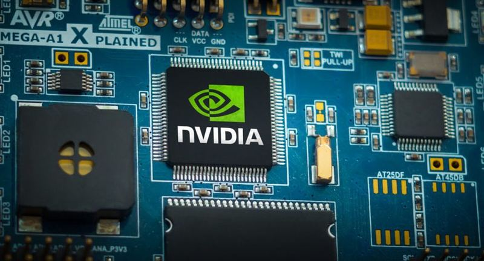
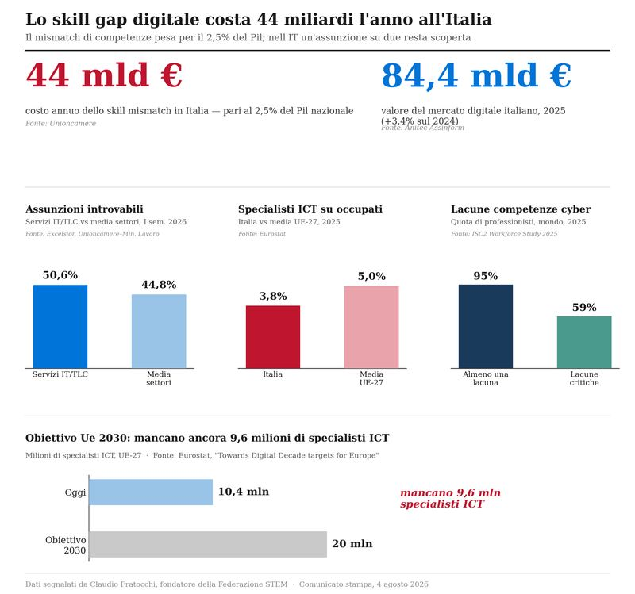
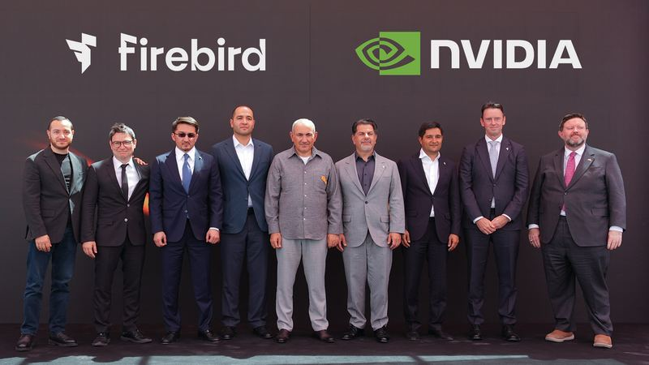
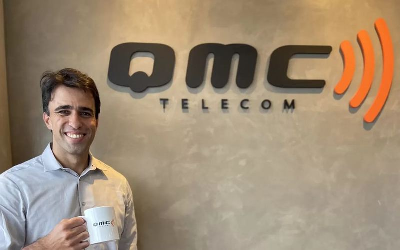
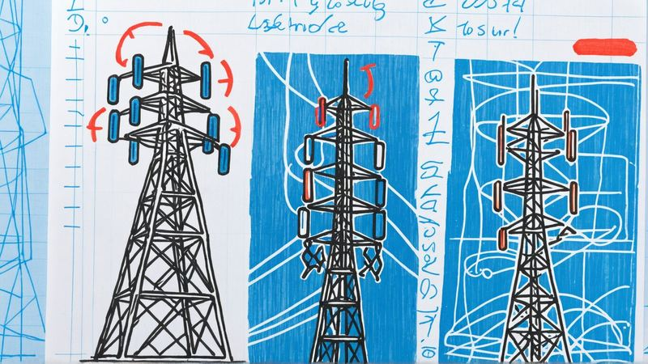
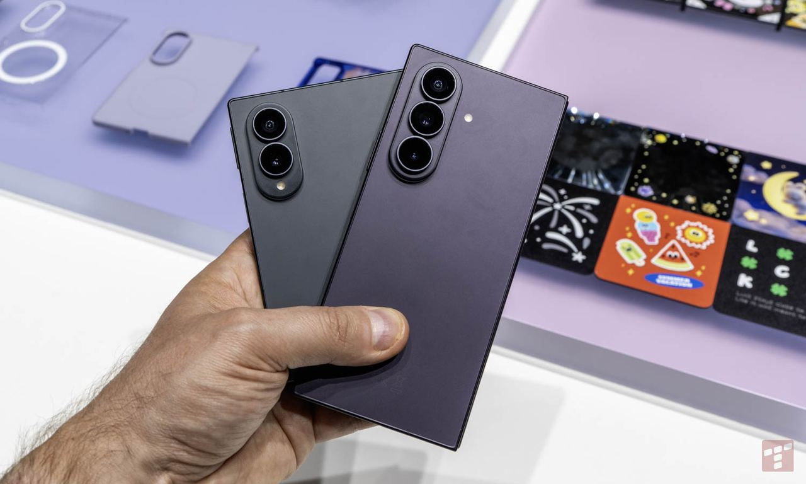
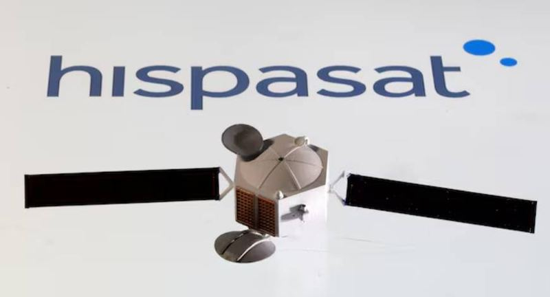
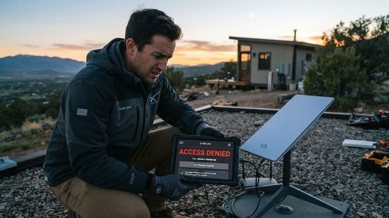

Movistar sperrt Kunden-ONT ab 15. September
Movistar sperrt Kunden-ONT ab 15. September
Ausgabe vom 8. August 2026
Alle Meldungen
Netz & Technik
Movistar sperrt Kunden-ONT ab 15. September
Tarife & Angebote
 spusu und Telekom bieten Datenretter nach Vodafone-Streichung
spusu und Telekom bieten Datenretter nach Vodafone-Streichung
Satellit & Direct-to-Cell
Regulierung & Politik

USA prüfen Nvidia-Chip-Zugang chinesischer KI-FirmenGeld & Übernahmen
 Octopus Investments vor Kauf von TalkTalks Wholesale-Plattform
Octopus Investments vor Kauf von TalkTalks Wholesale-Plattform
Partnerschaften
 Ziggo startet am 20. August auf Delta-Fiber-Netz
Ziggo startet am 20. August auf Delta-Fiber-Netz
Vermischtes

Italien: Digitale Kompetenzlücke kostet Wirtschaft 44 Milliarden Euro
Netz & Technik
15 Meldungen
Telefónica · 2026-08-08
Movistar sperrt Kunden-ONT ab 15. September
Movistar wird ab dem 15. September eigene Netzabschlussgeräte (ONT) vorschreiben und nicht zertifizierte, vom Kunden gekaufte ONTs blockieren. Eine offizielle Überprüfung, ob man betroffen ist, ist über das Movistar-Forum möglich.
Was das für uns heißtWenn Movistar eigene ONTs sperrt, ist das eine Gelegenheit für Vodafone Deutschland, mit offener Hardware-Politik zu werben – sehr wahrscheinlich ein Kundengewinnungsmerkmal.

KI-Cloud Firebird startet größte KI-Fabrik der GUS in Armenien
Neutraler Host betreibt 200 Indoor-5G-Netze in Einkaufszentren und Kliniken
TIP Brasil investiert 25 Mio. Reais in MVNO-AusbauAuch berichtet von TeleSíntese (BR), TELETIME (Brasilien)
Tarife & Angebote
20 Meldungen

Plus lockt mit bis zu 500 Zloty Bonus bei Galaxy-InzahlungnahmeWas das für uns heißtEin gestaffelter Trade-in-Bonus für Foldables könnte den Gerätewechsel bei Vodafone Deutschland beschleunigen.
Was das für uns heißtDas Redmi 17C 5G könnte mit aggressivem Preis das Einsteigersegment dominieren – Vodafone muss gegebenenfalls das eigene Budgethandy-Portfolio nachschärfen.
 Free führt TV-Kanal-Übersicht mit über 900 Diensten an
Free führt TV-Kanal-Übersicht mit über 900 Diensten an
Was das für uns heißtFree dominiert mit über 900 TV-Kanälen – Vodafone könnte in Deutschland ähnliche Content-Bündel prüfen, um sich von der Telekom abzuheben.
 Giant startet kostenlosen Guardian-Sicherheitsdienst für Breitband
Giant startet kostenlosen Guardian-Sicherheitsdienst für Breitband
 Digi promotet VoLTE-Aktivierung bei Bestandskunden aktiv
Digi promotet VoLTE-Aktivierung bei Bestandskunden aktiv
Was das für uns heißtEine aktive VoLTE-Aktivierungs-Kampagne von Digi könnte als Blaupause dienen, um die VoLTE-Nutzung bei eigenen Bestandskunden zu steigern.
Was das für uns heißtDas Redmi 17 5G zwingt Vodafone, vergleichbare Preisbrecher im Einstiegssegment zu führen, um Prepaid-Marktanteile zu halten.
Was das für uns heißtUeber 300 Dollar teurer KI-Lautsprecher von OpenAI könnte das Premium-Smart-Home-Segment neu definieren – Chance für Vodafone, exklusive Bundles zu erproben.
Was das für uns heißtKostenlose Zugaben beim Gerätekauf in Frankreich – wahrscheinlich übertragbare Mechanik für eigene Samsung-Pre-Order-Kampagnen.
Satellit & Direct-to-Cell
12 Meldungen

Hispasat erhält 1,6-Mrd.-Euro-Auftrag für IRIS2-SatellitennetzAuch berichtet von Mobile World Live, TelecomTV

Starlink V5-Antenne schränkt Tarifauswahl einAuch berichtet von ISPreview UK
Regulierung & Politik
8 Meldungen

Partnerschaften
5 Meldungen
Ziggo · 2026-08-07
Ziggo startet am 20. August auf Delta-Fiber-Netz
Ab dem 20. August bietet Ziggo seine Dienste über das Glasfasernetz von Delta Fiber an und erreicht damit 680.000 zusätzliche Haushalte in Gebieten ohne eigenes Netz.
Was das für uns heißtZiggo nutzt Glasfaser eines Dritten, um die eigene Festnetz-Reichweite schnell zu erweitern – ein Modell, das Vodafone in Deutschland moeglich gegenueber der Telekom nachahmen koennte.
Frühere Ausgaben
8. August 2026
256 neue Meldungen
7. August 2026
381 neue Meldungen
6. August 2026
642 neue Meldungen
5. August 2026
426 neue Meldungen
4. August 2026
124 neue Meldungen
31. Juli 2026
220 neue Meldungen
28. Juli 2026
9 neue Meldungen
27. Juli 2026
49 neue Meldungen
26. Juli 2026
4 neue Meldungen
25. Juli 2026
11 neue Meldungen
21. Juli 2026
185 neue Meldungen
20. Juli 2026
27 neue Meldungen
19. Juli 2026
233 neue Meldungen
17. Juli 2026
257 neue Meldungen
16. Juli 2026
1991 neue Meldungen